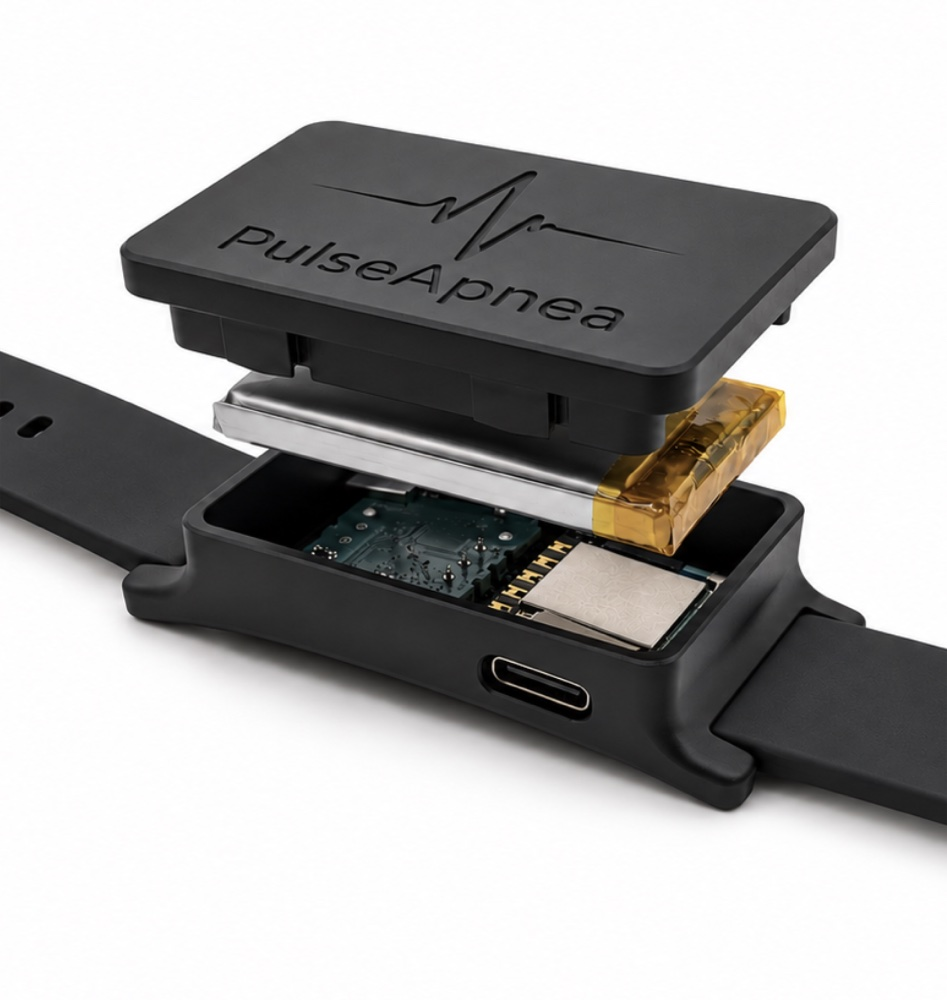
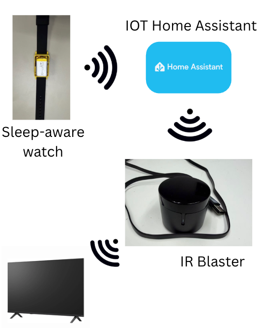
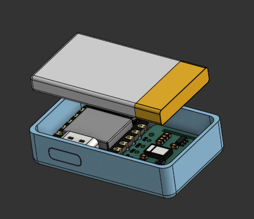
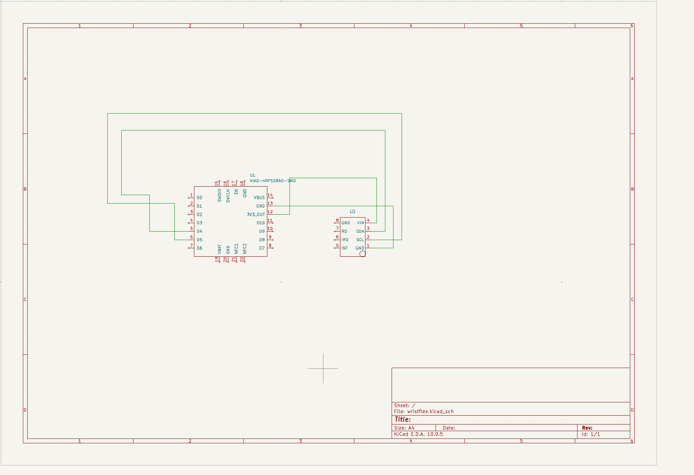
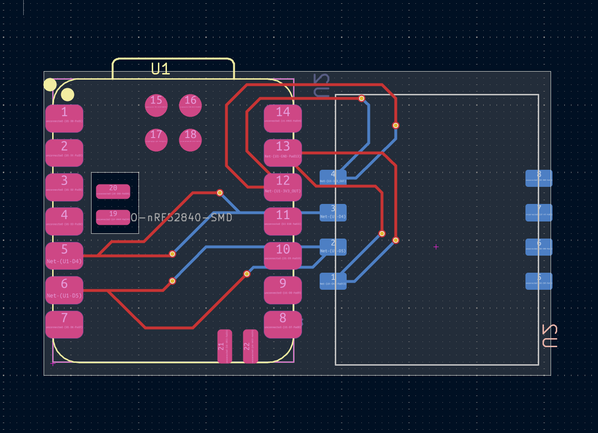
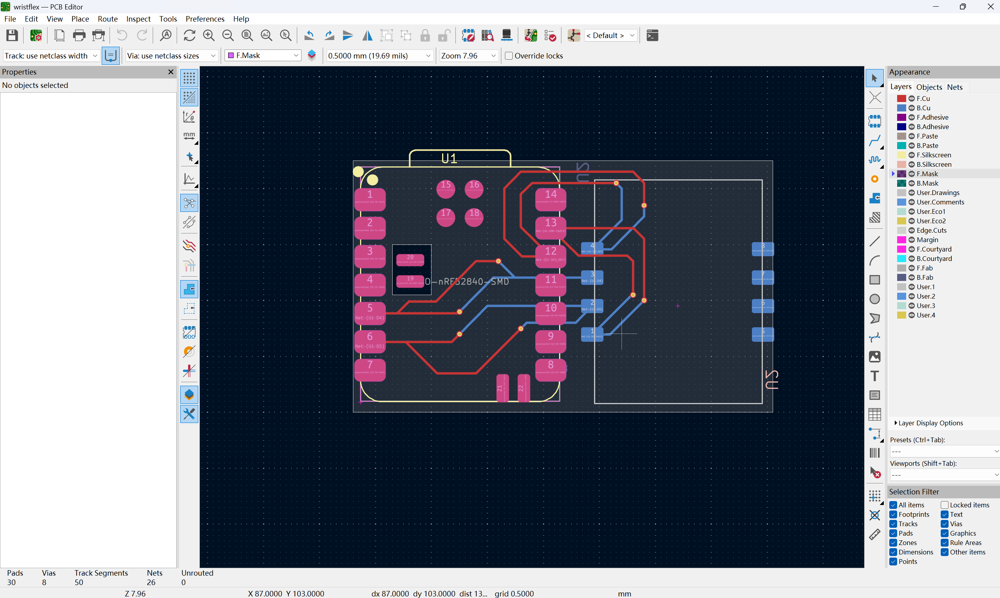

PulseApnea started as a sleep-aware wristband that turned your devices off once you fell asleep. After months of research and development it is now an AI-powered sleep apnea wristband, aimed at a condition that affects an estimated 1 billion people worldwide.

Another IoT sleep remote, built for convenience: a wrist device that notices when you have fallen asleep and switches off nearby electronics to save electricity.

Serious prototyping began. The watch became a physical device and the infrared remote integration was completed, so it could turn off the devices around the user.

While building sleep tracking we found that the methods that reliably tell whether you are asleep also produce detailed physiological data. We wanted that data to deliver more value, and began linking it to health conditions. Obstructive sleep apnea (OSA) affects an estimated 1 billion people worldwide, so we pivoted to researching a device that could help.
The first polished PulseApnea prototype was built. We upgraded the sensors and microcontroller for the new purpose, contacted local hospitals for training data, and began developing and training our own machine learning models to push detection accuracy further.
The new hardware centres on a Seeed XIAO nRF52840 connected over I²C to a pulse sensor. We drew the schematic and routed a custom two-layer board in KiCad.



We have started building our own app to pair with the device, while continuing to improve and train the machine learning model in parallel.
The model now reaches 80% accuracy on the four-class severity task, but on a small labelled set. Next: confirm it holds with participant-grouped cross-validation and additional patient data, and keep improving the CNN.
| Metric | Value | What it means |
|---|---|---|
| Accuracy | 80% | Nights placed in the correct severity class |
| Sensitivity (severe) | 75% | Severe nights correctly flagged |
| Specificity (severe) | 68.8% | Non-severe nights correctly cleared |
| F1 score | 0.718 | Macro and weighted F1 are both 0.718 |
Interactive charts built from open, clinically scored polysomnography recordings on PhysioNet. They illustrate the signals our model works with.
Patients grouped by apnea-hypopnea index (AHI), the number of breathing events per hour of sleep.
Each dot is one patient, colored by severity. Hover for their AHI.